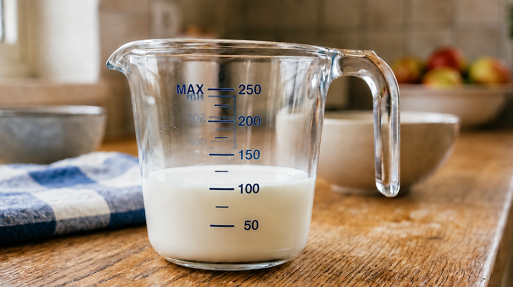
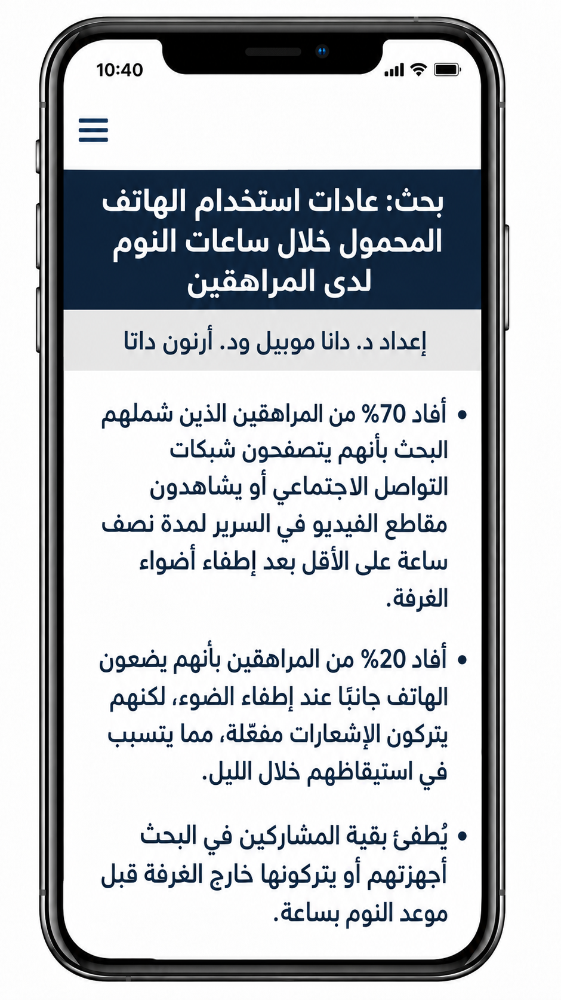
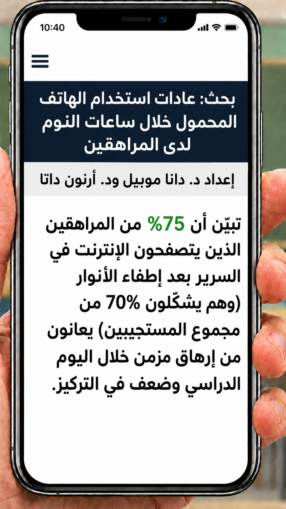

التمرين هو أفضل طريقة لتعزيز التعلم
5 أسئلة أسهل
وهناك تلميح من البداية! أجيبوا بشكل صحيح عن 4 أسئلة فما فوق لتتمكّنوا من التقدّم.
أ. كم يساوي %20 من 65؟
حلّوا بواسطة تحويل النسبة المئوية إلى كسر بسيط/عشري.
ب. كم يساوي %20 من 130؟
حلّوا بواسطة جدول التناسب.
يريد صنّاع برنامج المسابقات "السباق إلى باطن الأرض"
التحقق ممّا إذا كان الناس يشاهدون حلقاتهم عبر الشبكات الاجتماعية أم عبر موقع البرنامج.
توجهوا إلى 800 شخص.
%55 منهم قالوا إنهم يشاهدون عبر الشبكات الاجتماعية.
أما بقية المشاركين فيشاهدون عبر موقع البرنامج أو لا يشاهدون إطلاقًا.
كم طالبًا يشاهد الحلقات الكاملة عبر الشبكات الاجتماعية؟
حلّوا بواسطة جدول التناسب.
![ملصق عمودي بتصميم درامي لبرنامج مسابقات عبر الإنترنت باسم "السباق إلى باطن الأرض". في القسم العلوي يظهر مسار مطوّر ومضاء داخل كهف مظلم فيه هوابط وبلورات مضيئة، وعلى المسار يسير أزواج من المتسابقين يرتدون ملابس باحثي كهوف مع مصابيح رأس وحقائب ظهر. فوقهم تظهر كرة أرضية وبوصلة تشبهان رسومات "السباق إلى المليون". في مركز الملصق يظهر شعار البرنامج بأحرف ثلاثية الأبعاد كبيرة بدرجات البرتقالي والأصفر، وتحته رمز بوصلة معدنية كبيرة. في الأسفل يظهر زر أزرق مكتوب عليه "برنامج مسابقات عبر الإنترنت"، وتحته الشعار بالعبرية: "أنتم ستختارون التحدي التالي! أيام السبت، 21:15".](assets/img/basic2.jpg)
يحتوي كوب حليب على نحو %15 من كمية الكالسيوم اليومية الموصى بها للشبيبة، وهي 1,300 ملغم.
كم ميليغرام من الكالسيوم يوجد في كوب حليب؟
احسبوا بواسطة جدول التناسب.

خلال أسبوع الاستدامة وجودة البيئة،
أنشأ مجلس الطلاب محطة لإعادة التدوير.
وضعوا في المحطة حاويات لإعادة تدوير القناني الزجاجية، العبوات المعدنية والعلب
(مثل كراتين الحليب والعصير).
جمعوا 2,400 عبوة وقنينة بالمجمل!!
قبل نقل العبوات إلى مصنع إعادة التدوير، تبيّن أن %35 من جميع العناصر كانت عبوات كرتون، والباقي قناني بلاستيكية وعلب.
كم عبوة كرتون جمع الطلاب خلال أسبوع الاستدامة؟
احسبوا بواسطة تحويل النسبة المئوية إلى كسر بسيط/عشري.
![طالبان، فتى وفتاة، يقفان مبتسمين خلف محطة إعادة تدوير مغطاة في ساحة مدرسة. إلى اليسار طالبة من أصول إثيوبية ترتدي قميصًا أخضر وتحمل قطعة كرتون مطوية. إلى اليمين طالب من أصول شرقية يرتدي قميصًا أزرق ويحمل زجاجة بلاستيكية وعلبة. على قميصيهما شعار شجرة واسم "نفيه حمتسيتسيم". تتضمن محطة إعادة التدوير أربع حاويات ملونة عليها نصوص ورموز: حاوية بنفسجية لـ"الزجاج"، حاوية زرقاء لـ"الورق والكرتون"، حاوية برتقالية لـ"عبوات البلاستيك والمعدن"، وحاوية رمادية لـ"العلب". في الخلفية تظهر مباني المدرسة ولافتات توجيه ("المبنى أ") وأشجار وطلاب آخرون يلعبون في الساحة.](assets/img/basic4.jpg)
كل واحد من طلاب الصف الثامن الـ 120 في مدرسة "آفاق"
ملزم بالتطوع هذا العام في واحد من مجالات التطوع الأربعة -
المساعدة في بيت المسنّين، تعبئة الطرود الغذائية للمحتاجين،
تقديم المساعدة التعليمية للطلاب الذين يواجهون صعوبات، والإرشاد الاجتماعي.
تظهر بيانات التسجيل في المخطط الدائري.
أ. كم طالبًا طلبَ التطوع في تعبئة الطرود الغذائية؟
كل واحد من طلاب الصف الثامن الـ 120 في مدرسة "آفاق"
ملزم بالتطوع هذا العام في واحد من مجالات التطوع الأربعة -
المساعدة في بيت المسنّين، تعبئة الطرود الغذائية للمحتاجين،
تقديم المساعدة التعليمية للطلاب الذين يواجهون صعوبات، والإرشاد الاجتماعي.
تظهر بيانات التسجيل في المخطط الدائري.
ب. كم طالبًا سجلوا للتطوع في بيت المسنّين والإرشاد الاجتماعي؟
اكتشفنا أن 78 طالبًا سجلوا للتطوع في بيت المسنّين والإرشاد الاجتماعي.
قررت المدرسة توزيع الطلاب بالتساوي بين جميع مجالات التطوع:
%25 من الطلاب لكل مجال تطوع.
ت. هل سيحصل جميع الطلاب على مجال التطوع الذي سجلوا له؟
اكتشفنا أن 78 طالبًا سجلوا للتطوع في بيت المسنّين والإرشاد الاجتماعي.
قررت المدرسة توزيع الطلاب بالتساوي بينهم. %25 من الطلاب لكل مجال تطوع.
ث. كم طالبًا ممّن سجلوا للمساعدة في بيت المسنّين والإرشاد الاجتماعي سيحتاجون إلى اختيار مجال تطوع آخر؟
عمل رائع!
سنعود إلى تمرينين بمستوى صعوبة أعلى.
قرّر وائل أنه سيشارك هذا العام في مسابقة سباحةعُبور بحيرة طبرياعبور بحيرة طبريا هو أكبر وأطول حدث شعبي للسباحة في المياه المفتوحة في إسرائيل. يتضمن الحدث مسارات شعبية ومسارات تنافسية بأطوال تتراوح بين 1.5 كم و-5 كم..
خلال 50 يومًا من التدريب، سجّل الأطعمة التي كان يأكلها في وجبات الإفطار ليفهم
ما إذا كان يتناول ما يكفي من الوجبات الغنية بالبروتين قبل التدريب.
وصل إلى الجدول التالي.
أ. أكملوا عمود "الكمية من إجمالي وجبات الإفطار" في الجدول بحسب النسب المئوية المعطاة.
استخدموا تحويل النسبة المئوية إلى كسر بسيط/عشري.
| وجبة الإفطار | النسبة المئوية من إجمالي وجبات الإفطار | الكمية من إجمالي وجبات الإفطار |
|---|---|---|
| شطيرة عجة - غنية بالبروتين | 40% |
|
| حبوب الإفطار | 20% |
|
| زبادي بروتين | 10% |
|
| فاكهة | 30% |
|
![صورة عمودية لطاولة خشبية عليها مجموعة متنوعة من أطباق الإفطار، مع ملصقات جرافيكية تعرض نسبًا مئوية. في المقدمة طبق عليه شطيرة غنية بالبروتين (عجة، جبنة وخضار) وعليها النص "شطيرة (%40)". خلفها وعاء حبوب إفطار مع توت عليه علامة "حبوب إفطار (%20)"، إلى جانب كوب عصير برتقال وكوب ماء. في الخلفية وعاء زبادي أبيض مع ملعقة، وعليه العلامة"LACTOZIKA ألبان لاكتوزيكا" وعلامة "زبادي بروتين (%10)". إلى اليمين طبق أبيض فارغ وعليه شوكة، مع سهم يشير إلى العلامة "بدون إفطار (%30"). الطاولة في مطبخ منزلي مضاء بضوء النهار الطبيعي.](assets/img/standard_b_1.jpg)
ينجح وائل في تناول وجبات غنية بالبروتين في %50 من الوقت فقط.
وهو يدرك أن ذلك غير كافٍ، خصوصًا عند التدريب.
ب. اقترحوا على وائل طريقة يمكنه من خلالها التأكد من أنه يتناول وجبات
تحتوي على ما يكفي من البروتين قبل التدريب.
نُشرَ مؤخرًا بحث فحصَ العلاقة بين عادات استخدام
الشبيبة للهاتف المحمول خلال الساعة ما قبل النوم، وبين جودة نومهم.
شارك في البحث 2,000 شاب في سن المرحلة الإعدادية.
اقرؤوا معطيات البحث في المنشور على اليسار.
أ. كم شابًا من المشاركين في البحث يتصفحون الهاتف في السرير بعد إطفاء الأنوار؟
حلّوا بواسطة جدول التناسب.

وجدنا أن 1,400 شاب يواصلون التصفح بعد إطفاء الأنوار.
تبيّن أن %75 منهم يعانون من التعب المزمن وصعوبة في التركيز.
ب. كم شابًا في البحث يعانون من هذه الصعوبات؟
